わが
日本は
地震の
國といはれてゐる。また
火山の
國ともいはれてゐる。
地震や
火山が
多いからとて
御國自慢にもなるまいし、
強い
地震や
激しい
噴火が
度々あるからとて、
外國に
誇るにも
當るまい。
實際この
頃のように
地震、
火災、
噴火などに
惱まされつゞきでは、
却つて
恥かしい
感じも
起るのである。たゞわれ／＼
日本人としてはかような
天災に
屈することなく、
寧ろ
人力を
以てその
災禍をないようにしたいものである。かくするには
地震や
火山の
何物であるかを
究めることが
第一である。
所謂敵情偵察である。
敵情が
悉くわかつたならば、
災禍をひき
起すところのかの
暴力を
打ち
碎くことも
出來よう。この
目的を
達してこそわれ／＼は
他國人に
對して
恥かしいといふ
感じから
始めて
免れ
得られるであらう。
火山や
地震は
強敵である。
強敵を
見て
恐れずとは
戰爭だけに
必要な
格言でもあるまい。
昔の
人はこれらの
自然現象を
可なり
恐れたものである。
火山の
噴火鳴動を
神業と
考へたのは
日本ばかりではないが、
特に
日本においてはそれが
可なり
徹底してゐる。まづ
第一に、
噴火口を
神の
住み
給へる
靈場と
心得たことである。
例へば
阿蘇山の
活動の
中心たる
中岳は
南北に
長い
噴火口を
有し、
通常熱湯を
湛へてゐるが、これが
數箇に
區分せられてゐるので
北の
池を
阿蘇の
開祖と
稱へられてゐる
建磐龍命の
靈場とし、
中の
池、
南の
池を、それ／″＼
奧方の
阿蘇津妃命、
長子たる
速瓶玉命の
靈場と
考へられてあつた。
丁度イタリーの
南方リパリ
群島中の
一火山島たるヴルカーノ
島をローマの
鍛冶の
神たるヴルカーノの
工場と
考へたのと
同樣である。
更に
日本では、
火山の
主が
靈場を
俗界に
穢されることを
厭はせ
給ふがため、
其處を
潔める
目的を
以て
時々爆發を
起し、
或は
鳴動によつて
神怒のほどを
知らしめ
給ふとしたものである。それ
故にこれ
等の
異變がある
度に、
奉幣使を
遣して
祭祀を
行ひ、
或は
神田を
寄進し、
或は
位階勳等を
進めて
神慮を
宥め
奉るのが、
朝廷の
慣例であつた。
例へば
阿蘇の
建磐龍命は
正二位勳五等にのぼり、
阿蘇津妃命は
正四位下に
進められたが
如きである。
天台宗の
寺院は、
高地に
多く
設けてあるが、
火山もまた
彼等の
選に
漏れなかつた。
隨つて
珍しい
火山現象の、これ
等の
僧侶によつて
觀察せられた
例も
少くない。
阿蘇の
靈地からは
火の
玉が
三つ
飛び
出たともいひ、また
性空上人は
霧島の
頂上に
參籠して
神體を
見屆けたといふ。それによれば
周圍三丈、
長さ
十餘丈、
角は
枯木の
如く、
眼は
日月の
如き
大蛇なりきと。
鳥海又は
阿蘇の
噴火に
大蛇が
屡現れるのも、
迷信から
起つた
幻影に
外ならないのである。ハワイ
島の
火山キラウエアからは
女神ペレーの
涙や
毛髮が
採集せられ、
鳥海山は
石の
矢尻を
噴出したといはれてゐる。
神話にある
八股の
大蛇の
如きも
亦噴火に
關係あるものかも
知れぬ。
火山に
關する
迷信がこのように
國民の
腦裡を
支配してゐる
間、
學問が
全く
進歩しなかつたのは
當然である。
昔の
雷公が
今日我々の
忠實な
使役をなすのに、
火山の
神のみ
頑固におはすべきはずがない。
火山地方の
地下熱の
利用などもあることだから、
使ひ
樣によつては
人生に
利益を
與へる
時代もやがて
到着するであらう。
［＃改ページ］
わが
日本には
火山は
珍しくないから、
他國に
於ても
一兩日の
行程内に
火山のない
所はあるまいなどと
思はれるかも
知れないが、
實際はさういふ
風になつてゐない。
例へば
現在活動中の
火山は
南北アメリカ
洲では
西の
方の
太平洋沿岸だけに
一列に
竝んでをり、
中部アメリカ
地方では
二條になつて
右の
南北線につながつてゐる。
大體太平洋沿岸地方は
火山の
列を
以て
連絡を
取つてゐるので、わが
國の
火山列も、
千島、アレウト
群島を
經てアメリカの
火山列につながつてゐるのである。その
他歐洲にはイタリーに
四箇、ギリシヤに
一箇有名な
活火山があり、その
外にはイスランドに
數箇あるきりで、
北米の
東部、
或は
歐洲の
北部にゐる
人には、
火山現象を
目撃することが
容易でない。
太平洋の
中央部、
特にハワイ
島にはキラウエアといふ
有名な
活火山があるが、
活火山に
最も
豐富な
場所はジャワ
島である。こゝには
活火山だけの
數が
四十箇も
數へられるといはれてゐる。わが
國も
活火山には
可なり
富んでゐるけれども、ジャワには
及ぶべくもない。
試みに
世界に
於て
名ある
活火山を
擧げてみるならば、
南米エクワドル
國に
於るコトパクシ（
高さ
五千九百四十三米）は、
圓錐形の
偉大な
山であるが、
噴火の
勢力も
亦偉大で、
鎔岩の
破片を
六里の
遠距離に
噴き
飛ばしたといふ、この
點に
就ての
記録保持者である。
又その
噴火の
頻々な
點に
於ても
有名である。
西インドの
小アンチル
群島中にあるマルチニック
島の
火山プレー（
高さ
［＃「高さ」は底本では「高き」］千三百五十米）は、その
西暦千九百二年五月八日の
噴火に
於て、
赤熱した
噴出物を
以て
山麓にある
小都會サンピール
市を
襲ひ、
二萬六千の
人口中、
地下室に
監禁されてゐた
一名の
囚徒を
除く
外、
擧つて
死滅したことに
於て
有名である。ヴェスヴィオ
噴火によるポムペイ
全滅の
慘事に
勝るとも
劣ることなきほどの
出來事であつた。この
時噴火口内に
出現した
高さ
二百米の
鎔岩塔も
珍しいものであつたが、それは
噴火の
末期に
於て
次第に
崩壞消失してしまつた。
ハワイのキラウエア
火山（
高さ
千二百三十五米）は、ハワイ
島の
主峯マウナ・ロア
火山の
側面に
寄生してゐるものであるが、
通常の
場合、その
噴火口に
鎔岩を
充たし、しかもこの
鎔岩が
流動して
種々の
奇觀を
呈するので、
觀光客を
絶えずひきつけてゐる。
火山毛はその
産物として
最も
有名である。
山上に
有名な
火山觀測所がある。
又觀光客のために
開いた
旅館もあり、ハワイ
島の
船着場ヒロからこゝまで
四里の
間、
自動車にて
面白い
旅行も
出來る。
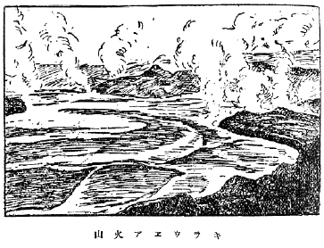
キラウヱア火山
マウナ・ロアは
四千百九十四米の
高さを
有つてをり、わが
國の
富士山よりも
四百米以上高いから、
讀者はその
山容として
富士形の
圓錐形を
想像せられるであらうが、
實は
左にあらず、
寧ろ
正月の
御備餅に
近い
形をしてゐる。
或は
饅頭形とでも
名づくべきであらうか。
山側の
傾斜は
僅に
六度乃至八度に
過ぎない。これはその
山體を
作つてゐる
岩石（
玄武岩）の
性質に
因るものであつて、その
鎔けてゐる
際は
比較的に
流動し
易いからである。
昭和二年、
大噴火をなしたときも
噴火口から
流れ
出る
鎔岩が、
恰も
溪水の
流れのように
一瀉千里の
勢を
以て
駈け
下つたのである。
尤も
山麓に
近づくに
從ひ、
温度も
下り
遂には
暗黒な
固體となつて
速さも
鈍つたけれども。
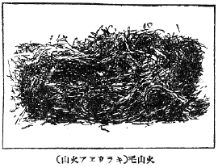
火山毛（キラウヱア火山）
スマトラとジャワとの
間、スンダ
海峽にクラカトアといふ
直徑二里程の
小島があつた。これが
西暦千八百八十三年に
大爆裂をなして、
島の
大半を
噴き
飛ばし、
跡には
高さ
僅に
八百十六米の
小火山島を
殘したのみである。この
時に
起つた
大氣の
波動は
世界を
三週半する
迄追跡し
得られ、
海水の
動搖は
津浪として
全地球上殆んど
到る
處で
觀測せられた。また
大氣中に
混入した
灰塵は
太陽を
赤色に
見せること
數週間に
及んだ。
實に
著者の
如きも
日本に
於てこの
現象を
目撃した
一人である。
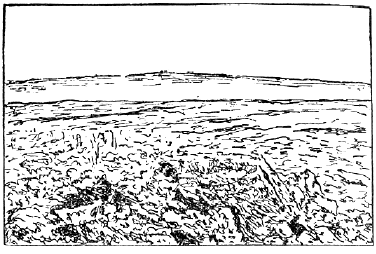
マウナ・ロア（ハワイ島）
ジャワ
島のパパンダヤング
火山は
西暦千七百七十二年の
噴火に
於て、
僅に
一夜の
間に
二千七百米の
高さから
千五百米に
減じ、
噴き
飛ばしたものによつて
四十箇村を
埋沒したといふ。
恐らくはこれが
有史以來の
最も
激烈な
噴火であつたらう。
イタリーで
最も
著名な
火山はヴェスヴィオ（
高さ
千二百二十三米）であるが、これが
世界的にもまた
著名であるのは、
西暦紀元七十九年の
大噴火に
於て、ポムペイ
市を
降灰にて
埋沒したこと、
有名な
大都市ナポリに
接近してゐるため
見學に
便利なこと、
凡そ
三十年位にて
活動の
一循環をなし、
噴火現象多種多樣にて
研究材料豐富なること、
登山鐵道、
火山觀測所、
旅館の
設備完全せる
等に
因るものである。
著者が
七年前に
見たときは、つぎの
大噴火は、
或は
十年以内ならんかとの
意見が
多かつたが、この
年の
九月三十日に
見たときは、
大噴火の
時機切迫してゐるように
思はれた。
或は
數年内に
大爆發をなすことがないとも
限らぬ。
イタリーの
地形は
長靴のようだとよくいはれてゐることであるが、その
爪先に
石ころのようにシシリー
島が
横たはつてをり、
爪先から
砂を
蹴飛ばしたようにリパリ
火山群島がある。
其中活火山はストロムボリ（
高さ
九百二十六米）とヴルカーノ（
高さ
四百九十九米）との
二箇であるが、
前者は
有史以來未だ
一日も
活動を
休止したことがないといふので
有名であり、
後者は
前にも
記した
通り、
火山なる
外國語の
起原となつたくらゐである。この
外イタリーにはシシリー
島にエトナ
火山（
高さ
三千二百七十四米）があり、
以上イタリーの
四火山、いづれもわが
日本郵船會社の
航路に
當つてゐるので、
甲板上から
望見するには
頗る
好都合である。もし
往航ならば
先づ
左舷の
彼方にエトナが
高く
屹立してゐるのを
見るべく、
六七合目以上は
無疵の
圓錐形をしてゐるので
富士を
思ひ
出すくらゐであるが、それ
以下には
二百以上の
寄生火山が
簇立してゐるので
鋸齒状の
輪廊が
［＃「輪廊が」はママ］見られる。この
山は
平均十年毎に
一回ぐらゐ
爆發し、
山側に
生ずる
裂け
目の
彼方此方を
中心として
鎔岩を
流し、
或は
噴出物によつて
小圓錐形の
寄生火山を
形作るなどする、つぎに
郵船がメシナ
海峽を
通過すると、
遙か
左舷に
鋸山式のヴルカーノが
見える。
更に
進むと
航海者には
地中海の
燈臺と
呼ばれ、
漁獵者には
島の
晴雨計と
名づけられてゐるストロムボリが
見える。この
火山島は
直徑僅に
三粁の
小圓錐であつて、その
北側に
人口二千五百の
町があり、
北西八合目に
噴火口がある。
火孔は
三箇竝立して
鎔岩を
湛へ、
數分間おきに
之を
噴き
飛ばしてゐる。もしそこを
通過するのが
夜であるならば、
吹き
飛ばされた
赤熱鎔岩が
斜面を
流れ
下つて、
或は
途中で
止まり、
或は
海中まで
進入するのが
見られるが、
日中ならば
斜面を
流下する
鎔岩が
水蒸氣の
尾を
曳くので、これによつてそれと
氣づかれるのみである。この
火山の
噴出時に
於ける
閃光は
遠く
百海里を
照らすので、そこでストロムボリが
地中海の
燈臺と
呼ばれる
所以である。かくてこれ
等の
展望をほしいまゝにしたわが
郵船はナポリ
港に
到着し、ヴェスヴィオを
十分に
見學し
得る
機會も
捉へられるのである。
先づ
頂上から
絶えず
噴き
出す
蒸氣や
火山灰によつて
直ぐにそれがヴェスヴィオなることが
氣づかれるが、それと
同時に
今一つ
左方に
竝立して
見える
尖つた
山を
見落してはならぬ。
山名はソムマといはれてゐるが、これがソムマ
即ち
外輪山といふ
外國語の
起りである。
地圖で
見るソムマはヴェスヴィオを
半ば
抱擁した
形をしてゐる。
即ち
不完全な
外輪山であつて、もしそれが
完全ならば
中央にある
圓錐状の
火山を
全部抱擁する
形になるのである。ヴェスヴィオは
西暦七十九年の
大噴火前までは、このソムマの
外側を
引き
伸したほどの
一箇の
偉大な
圓錐状の
火山であつたのが、あのをりの
大噴火のために
東南側の
大半を
吹き
飛ばし、その
中央に
現在のヴェスヴィオを
中央火口丘として
殘したものと
想像されてゐる。ポムペイの
遺跡は
山の
中央から
南東九粁の
遠距離にあるが、これはその
時降りつづいた
降灰によつて
全部埋沒せられ、その
後幾百年の
間その
所在地が
見失はれてゐたが、
西暦千七百四十八年一農夫の
偶然な
發見により
遂に
今日のように
殆んど
全部發掘されることになつたのである。ポムペイの
滅びた
原因が
降灰にあることは、
空中から
見た
寫眞でもわかる
通り、
各家屋の
屋根は
全部拔けてゐて、
四壁が
完備してゐることによつてもわかるが、
西暦千九百六年の
大噴火のとき、
僅に
三十分間同方向に
降り
續いた
火山灰が、
山の
北東にあるオッタヤーノの
町に
九十糎も
積り、
多くの
屋根を
打ち
拔いて
二百二十人の
死人を
生じたことによつても、うなづかれるであらう。かういふ
風の
家屋被害と、
放射された
噴出物によつて
破壞せられたサンピール
市街の
零落とは
著しい
對象である
［＃「對象である」はママ］。もし
昨日まで
繁昌したサンピールの
舊市街零落した
跡を
噴出物流動の
方向から
眺むれば、
殘つた
壁が
枯木林のように
見え、それに
直角の
方向から
見ると
壁の
正面整列が
見られたといふ。
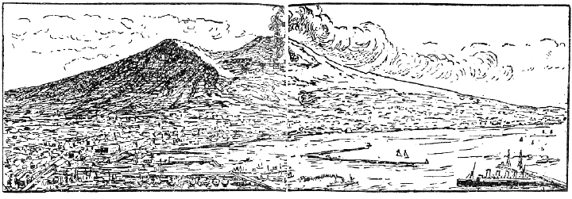
ヴェスヴィオ火山の遠景
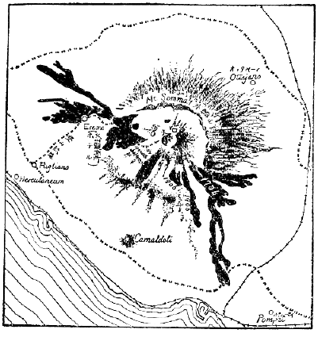
ヴェスヴィオ火山平面圖
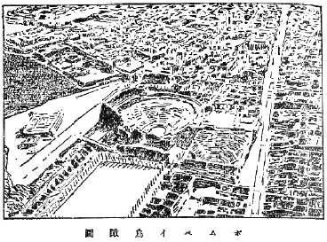
ポムペイ鳥瞰圖
ヴェスヴィオに
登山した
人は、
通常火口内には
暗黒に
見える
鎔岩の
平地を
見出すであらう。これは
絶えず
蒸氣、
火山灰、
鎔岩等を
噴き
出す
中央の
小丘から
溢れ
出たものであつて、かゝる
平地を
火口原と
名づけ、
外輪山に
對する
中央の
火山を
中央火口丘と
名づける。わが
富士山の
如く
外輪山を
持たない
火山は
單式であるが、ヴェスヴィオの
如く
外輪山を
有するものは
複式である。
われ／＼はこれまで
海外の
著名な
火山を
一巡して
來た。これから
國内にて
有名な
活火山を
一巡して
見たい。
有史以前には
噴火した
證跡を
有しながら、
有史以來一回も
噴火したことのない
火山の
數はなか／＼
多い。
箱根山の
如きがその
一例である。われ／＼はこの
種の
火山を
死火山或は
舊火山と
名づけて、
有史以來噴火した
歴史を
有つてゐる
活火山と
區別してゐる。
但しわれ／＼の
歴史は
火山の
壽命に
比較すれば
極めて
短い
時間であるから、
現在死火山と
思はれてゐるものも、
數百年或は
數千年の
休息状態をつゞけた
後、
突然活動を
開始するものがないとも
限らぬ。これは
文化が
開けてから
餘り
多くの
年數を
經ない
場所、
例へば
北海道などの
死火山にはあり
得べきことである。
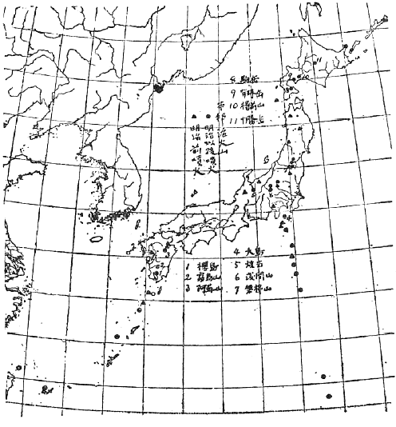
日本火山分布
歴史年代に
噴火した
實例を
有つてゐながら、
現在噴火を
休止してゐるものと、
活動中のものとあるが、
前者を
休火山と
名づけて
活火山と
區別してゐる
人もあるけれども、
本篇に
於ては
全部これを
活火山と
名づけて
必要のあつた
場合に
休活の
區別をなすことにする。
唯こゝに
斷りを
要することは
噴火といふ
言葉の
使ひ
方である。
文字からいへば
火を
噴くとなるけれども、これは
燃える
火を
指すのではない。
勿論極めて
稀な
場合には
噴出せられた
瓦斯が
燃えることがないでもないが、
一般に
火と
思はれてゐるのは
赤熱した
鎔岩である。
但しこれが
赤熱してゐなくとも
噴火たることに
變りはない。
例へば
粉末となつた
鎔岩、
即ち
火山灰のみを
噴き
出す
時でもさうである。
然しながら
單に
蒸氣、
瓦斯又は
硫氣を
噴出するだけでは
噴火とはいはないで、
蒸氣孔又は
硫氣孔の
状態にありといつてゐる。
箱根山は
形からいへば
複式火山、
經歴からいへば
死火山、
外輪山は
金時、
明神、
明星、
鞍掛、
三國の
諸山、
中央火口丘は
冠岳、
駒ヶ岳、
二子山、
神山等、さうして
最後の
活動場所が
大涌谷であつて、こゝには
今なほ
蒸氣孔、
硫氣孔が
殘つてゐる。
日本に
於ける
活火山の
兩大關、
東の
方を
淺間山とすれば、
西は
阿蘇山である。
中にも
阿蘇はその
外輪山の
雄大なことに
於て
世界第一といはれてゐる。
即ちその
直徑は
東西四里南北五里に
及び、こゝに
阿蘇一郡四萬の
人が
住まつてゐる。
但し
噴火はこの
火口全體から
起つたのではなく、
周圍の
土地の
陷沒によつて
斯く
擴がつたものだといふ。この
廣き
外輪山の
中に
幾つかの
中央火口丘があるが、それが
所謂阿蘇の
五岳である。これ
等は
重に
東西線と
南北線とに
竝列してゐるが、
中央の
交叉點に
當る
場所に
現在の
活火口たる
中岳（
高さ
千六百四十米）がある。この
中岳の
火口は
前に
記した
通り、
南北に
連續した
數箇の
池から
成立ち、
重なものとして、
北中南の
三つを
區別する。
阿蘇はこの
百年ぐらゐの
間、
平均十一年目に
活動を
繰返してゐるが、それはその
三つの
池のいづれかゞ
活氣を
呈するに
因るものである。
然しながら、
稀には
外の
場所から
噴き
出すこともある。
火口の
池が
休息の
状態にある
時は、
大抵濁水を
湛へてゐるが、これが
硫黄を
含むために
乳白色ともなれば、
熱湯となることもある。
活動に
先んじて
池水涸渇するのが
通常であるけれども、
突然爆發して
池水を
氾濫せしめたこともある。このために
阿蘇郡の
南半たる
南郷谷の
水を
集めて
流れる
白川が
文字通り
乳白色となり、
魚介を
死滅せしめることがある。
北方阿蘇谷の
水は
黒川に
集り、
兩方相會する
所で
外輪山を
破り
外方に
流れ
出る。
即ちこの
外輪山の
破れ
目が
火口瀬である。
箱根山でこれに
相當する
場所は
湯本の
早川と
須雲川の
相會する
所である。
阿蘇の
活動は
右の
外、
一般に
火山灰を
飛ばし、これが
酸性を
帶びてゐるので、
農作物を
害し、これを
食する
牛馬をも
傷めることがある。
阿蘇の
火山灰はこの
地方で『よな』と
稱へられてゐるが、
被害は
單に
阿蘇のみに
止まらずして、
大分縣にまでも
及ぶことがある。これは
空氣の
上層には
通常西風があるので、
下層の
風向きの
如何に
拘らず、
細かな
火山灰は
大抵大氣中の
上層に
入り、
東方に
運ばれるに
因るからである。
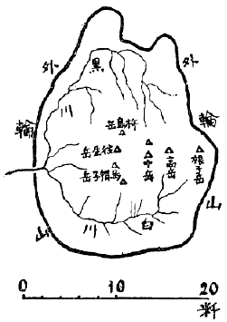
阿蘇火口の平面圖
阿蘇は
日本の
活火山中、
最も
登り
易い
山であらう。
國有鐵道宮地線の
坊中驛又は
宮地驛から
緩勾配の
斜面を
登ること
一里半ぐらゐで
山頂へ
達することが
出來る。
頂上近くに
茶店、
宿屋數軒あり、
冬季でも
登攀不可能でない。
但しある
意味に
於ける
世界第一のこの
火山に
於て
一の
觀測所をも
有しないことは、
外國の
學者に
對しても
恥かしく
思つてゐたが、
今は
京都帝國大學の
觀測所がこゝに
設立されてゐる。
つぎは
東の
大關たる
淺間山（
高さ
二千五百四十二米、
單式火山）を
覗いて
見ることにする。この
山も
阿蘇同樣に
噴火の
記録も
古く、
回數も
頗る
多いが、
阿蘇の
噴火のだら／＼として
女性的なるに
對し、これは
男性的であるといつても
然るべきである。
休息の
間隔は
比較的に
遠いが、
一度活動を
始めるとなか／＼
激しいことをやる。
現に
明治四十一年頃から
始まつた
活動に
於ては
鎔岩を
西方數十町の
距離にまで
吹き
飛ばし、
小諸からの
登山口、
七合目にある
火山觀測所にまで
達したこともある。
特に
天明三年（
西暦千七百八十三年）の
噴火は
激烈であつて、
現在鬼押出しと
名づけてゐる
鎔岩流を
出したのみならず、
熱泥流を
火口壁の
最も
低い
場所から
一時に
多量に
溢れさせ、
北方上野の
國吾妻川に
沿うて
百數十村を
埋め、
千二百人の
死者を
生ぜしめた。
最初の
活動に
於ては
火口内の
鎔岩が、
火口壁の
縁まで
進み、
一時流出を
氣遣れたけれども、つひにそのことなくして、
鎔岩の
水準が
再び
低下してしまつたのである。
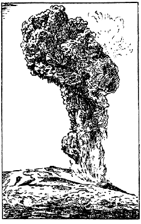
淺間の噴火（菜花煙）
このついでに
記して
置きたいのは、
飛騨信濃の
國境にある
硫黄嶽、
一名燒岳（
高さ
二千四百五十八米）である。この
山は
近時淺間山と
交代に
活動する
傾きを
有つてゐるが、
降灰のために
時々災害を
桑園に
及ぼし、
養蠶上の
損害を
被らしめるので、
土地の
人に
迷惑がられてゐる。
近頃の
噴火で
最もよく
記憶せられてゐるのは
櫻島（
高さ
一千六十米）であらう。その
大正十二年の
噴火に
於ては、
山の
東側と
西側とに
東西に
走る
二條の
裂目を
生じ、
各線上五六の
點から
鎔岩を
流出した。この
状態はエトナ
式と
稱すべきである。
但し
櫻島はかういふ
大噴火を
百年或は
二三百年の
間隔を
以て
繰返すので、
隨つて
鎔岩の
流出量も
多く、
前回の
場合は
一・
六立方粁と
計算せられてゐるが、エトナは
西暦千八百九年乃至千九百十一年の
十回に
於て
合計〇・六一
立方粁しか
出してゐない。かくて
櫻島は
毎回多量の
鎔岩を
出すので
島の
大きさも
次第に
増して
行くが、
今回は
東側に
出た
鎔岩が
遂に
瀬戸海峽を
埋め、
櫻島をして
大隅の
一半島たらしめるに
至つた。かうして
鎔岩に
荒された
損害も
大きいが、それよりも
火山灰のために
荒廢した
土地の
損害、
地盤沈下によつて
失はれた
附近の
水田或は
鹽田の
損害はそれ
以上であつて、
鹿兒島縣下に
於ける
全被害千六百萬圓と
計上せられた。
櫻島噴火は
著しい
前徴を
備へてゐた。
數日前から
地震が
頻々に
起ることは
慣例であるが、
今回も
一日半前から
始まつた。
又七八十年前から
土地が
次第に
隆起しつゝあつたが、
噴火後は
元どほりに
沈下したのである。その
外温泉、
冷泉がその
温度を
高め、
或は
湧出量を
増し、
或は
新たに
湧出し
始めたようなこともあつた。
霧島火山群は
東西五里に
亙り
二つの
活火口と
多くの
死火山とを
有してゐる。その
二つの
活火口とは
矛の
峯（
高さ
千七百米）の
西腹にある
御鉢と、その
一里ほど
西にある
新燃鉢とである。
霧島火山はこの
二つの
活火口で
交互に
活動するのが
習慣のように
見えるが、
最近までは
御鉢が
活動してゐた。
但し
享保元年（
西暦千七百十六年）に
於ける
新燃鉢の
噴火は、
霧島噴火史上に
於て
最も
激しく、
隨つて
最高の
損害記録を
與へたものであつた。
磐梯山（
高さ
千八百十九米）の
明治二十一年六月十五日に
於ける
大爆發は、
當時天下の
耳目を
聳動せしめたものであつたが、クラカトアには
比較すべくもない。この
時に
磐梯山の
大部分は
蒸氣の
膨脹力によつて
吹き
飛ばされ、
堆積物が
溪水を
塞いで
二三の
湖水を
作つたが、
東側に
流れ
出した
泥流のために
土地のみならず、
四百餘の
村民をも
埋めてしまつたのである。
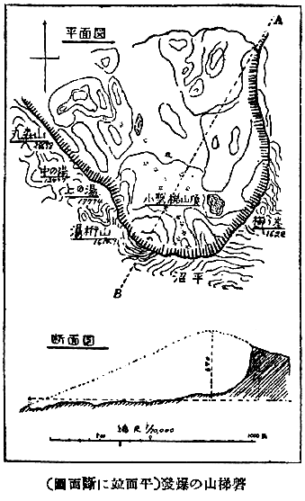
磐梯山の爆發（平面竝に斷面圖）
肥前の
温泉岳（
高さ
千三百六十米）は
時々小規模の
噴火をなし、
少量の
鎔岩をも
流出［＃ルビの「りゆうしゆつ」は底本では「ゆりうしゆつ」］することがあるが、
寛政四年四月一日（
西暦千七百九十二年五月二十一日）
噴火の
場所から
一里程も
離れてゐる
眉山の
崩壞を、
右の
磐梯山の
爆發と
同じ
現象のように
誤解してゐる
人がある。この
崩壞の
結果、
有明灣に
大津浪を
起し、
沿岸地方に
於て
合計一萬五千人ほどの
死者を
生じた
大事件［＃ルビの「だんじけん」はママ］もあつたので、
原因を
輕々しく
斷定することは
愼まねばならぬ。
磐梯山破裂の
跡には
大きな
蒸氣孔を
殘し、
火山作用は
今もなほ
盛んであるが、
眉山の
場合には
毫も
右樣の
痕跡を
止めなかつたのである。
磐梯山に
近く
吾妻山又の
名一切經山（
高さ
千九百四十九米）がある。この
山が
活火山であることは
明治二十六年に
至るまで
知られなかつたが、この
年突然噴火を
始めたゝめ
死火山でなかつたことが
證據立てられた。この
際調査に
向つた
農商務技師三浦宗次郎氏と
同技手西山省吾氏が
噴火の
犧牲になつた。
少年讀者は
東京上野の
博物館に
收めてある
血染めの
帽子と
上着とを
忘れないようにされたいものである。
東北地方の
活火山に
鳥海山（
高さ
二千二百三十米）、
岩手山（
高さ
二千四十一米）、
岩木山（
高さ
千六百二十五米）
等がある。いづれも
富士形の
單式火山であつて、
歴史年代に
於て
餘り
活溌でない
噴火を
數回乃至十數回繰返した。
享和年間の
鳥海噴火と
享保年間の
岩手噴火とに
於ては、
鎔岩を
流出せしめたけれども、それも
極めて
少量であつて、
山の
中腹までも
達しないくらゐであつた。
大島といふ
名前の
火山島か
［＃「火山島か」はママ］伊豆と
渡島とにある。
伊豆の
大島の
有する
火山は
三原山（
高さ
七百五十五米）と
名づけられ、
噴火の
古い
歴史を
有してゐる。
爆發の
力頗る
輕微であつて、
活動中に
於ても、
中央火口丘へ
近づくことが
容易である。
渡島の
大島も
歴史年代に
數回の
噴火を
繰返したが、
兩者共に
火山毛を
産することは
注意すべきことである。
但しいづれも
暗黒針状のものである。
北海道には
本島だけでも
駒ヶ岳（
高さ
千百四十米）、
十勝岳（
高さ
二千七十七米）、
有珠山（
高さ
七百二十五米）、
樽前山（
高さ
一千二十三米）の
活火山があつて、いづれも
特色ある
噴火をなすのである。その
中樽前は
明治四十二年の
噴火に
於て、
火口からプレー
式の
鎔岩丘を
押し
出し、それが
今なほ
存在して
時々その
彼方此方を
吹き
飛ばす
程の
小爆發をつゞけてゐる。また
有珠山の
明治四十三年の
噴火は
數日前から
地震を
先發せしめたので、
時の
室蘭警察署長飯田警視が
爆發を
未然に
察し、
機宜に
適する
保安上の
手段を
取つたことは
特筆すべき
事柄である。
十勝岳も
近頃まで
死火山と
考へられてゐた
火山の
一つであるが、
大正十五年突然の
噴火をなし、
雪融［＃ルビの「ゆきど」は底本では「きゆど」］けのため
氾濫を
起し、
山麓の
［＃「山麓の」は底本では「山麗の」］村落生靈を
流亡せしめたことは、
人々の
記憶になほ
新たなものがあるであらう。
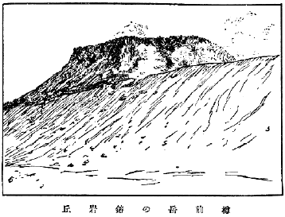
樽前岳の鎔岩丘
わが
國の
陸上の
火山を
巡見するに
當つてどうしても
省くことの
出來ないのは、
富士山（
高さ
三千七百七十八米）であらう。この
山が
琵琶湖と
共に
一夜にして
出來たなどといふのは、
科學を
知らなかつた
人のこじつけであらうが、
富士が
若い
火山であることには
間違ひはない。
古くは
貞觀年間［＃ルビの「じようかんねんかん」はママ］、
近くは
寶永四年にも
噴火して、
火口の
下手に
堆積した
噴出物で
寶永山を
形作つた。
即ち
成長期にあつた
少女時代の
富士も
一人の
子持ちになつたわけである。やがて
多くの
子供を
持ち
複式火山の
形ともなり、
遂には
現在の
箱根山の
状態になる
時も
來るであらう。
右の
外、
日本の
近海に
於ては、
時々海底の
噴火を
認めることがある。
伊豆南方の
洋底は
航海中の
船舶が
水柱を
望見し、
或は
鳴動に
伴つて
黒煙のあがるのを
見ることもあり、
附近の
海面に
輕石の
浮んでゐるのに
出會ふこともある。
大正十三年琉球諸島の
中、
西表島北方［＃ルビの「いりむてとうほつぽう」はママ］に
於ても
同樣の
現象を
實見したことがあつた。
以上の
通り、われ／＼は
内外の
活火山をざつと
巡見した。その
互の
位置を
辿つてみると
一つの
線上に
竝んでゐるようにも
見え、
或は
雁の
行列を
見るようなふうに
竝んでゐる
場合も
見受けられる。かういふ
脈が
所謂火山脈であつて、
最も
著名な
火山脈が
太平洋の
周圍に
横たはつてゐる
次第である。かくして
見る
時、
火山の
火熱の
原因、
或は
言葉を
換へていへば、
火山から
流出する
鎔岩の
前身たる
岩漿が
地下に
貯藏せられてゐる
場所は、
決して
深いものではなく、
地表下一二里或は
深くて
五六里以内の
邊らしく
想像せられる。
再び
火山脈を
辿つてみると、それが
地震の
起る
筋、
即ち
地震帶と
一致し、
或は
相竝行してゐる
場合が
多く
認められる。
然しながら
火山脈を
伴つてゐない
地震帶も
多數あることを
忘れてはならない。
元來地震は
地層の
破れ
目、
即ち
斷層線に
沿うて
起るものが
多數であり、さうして
地下の
岩漿は
右の
裂け
目に
沿うて
進出することは、
最もあり
得べきことであるから、
右のように
火山脈と
地震帶の
關係が
生じたのであらう。
［＃改ページ］
噴火によつて
噴き
出されるものゝ
本體は、
第一に
鎔岩であり、これが
前身たる
岩漿である。
岩漿は
非常な
高い
熱と
壓力との
下に
極めて
多量の
水を
含有することが
出來るから、
外界に
現れて
來た
鎔岩は
多量の
蒸氣を
吐くのである。この
蒸氣の
擴がる
力が
火山の
爆發力となるのである。それが
火口から
盛り
上つて
出る
形状は、
西洋料理に
使はれる
菜の
花に
似てゐるから
菜花状の
雲と
呼ばれる。これには
鎔岩の
粉末が
加はつてゐるから
多少暗黒色に
見える。それが
即ち
煙と
呼ばれる
以所である
［＃「以所である」はママ］。かういふふうに
噴出が
烈しい
時は
電氣の
火花が
現れる。
性空上人が
霧島火山の
神體と
認めたものは
以上の
現象に
相違なからう。
鎔岩は
種々の
形體となつて
噴出せられる。
先づ
火山灰の
外に、
大小の
破片が
抛げ
出される。もし
鎔融状のまゝのものが
地上に
落ちる
際、ある
程度に
冷却してゐたならば、
空中旅行中回轉運動のために
取つた
形を
維持し、そのまゝ、つむ
形、
鰹節形、
皿形樣の
火山彈となり、また
内部から
蒸氣を
吐き
出すため
ぱん形のものとなるのである。
鎔岩の
大部分は
火口底から
次第に
火口壁の
上部まで
盛り
上つて
遂に
外側に
溢れ
出るに
至ることがある。
或は
外壁の
上部に
生じた
裂け
目から
出ることもあり、
又側壁を
融かしてそこから
溢れ
出ることもある。この
流下の
際なほ
多量の
蒸氣を
吐き
出しつゝあると、
こーくすのような
粗面の
鎔岩となるが、もし
蒸氣が
大抵吐き
出されてしまつた
後ならば、
表面が
多少滑かに
固まり、
或は
繩をなつたような
形ともなり、
又犀の
皮を
見るように
大きな
襞を
作ることもある。ハワイ
土人はこれをパホエホエ
式と
呼んゐでゐる。
こーくす状の
鎔岩は
中央火口丘から
噴出せられて、それ
自身の
形體を
積み
上げて
行くことが
多い。
鎔岩に
無數の
泡末が
含まれたものは
輕石或はそれに
類似のものとなるのであるが、その
小片は
らぴりと
名づけられ、
火山灰と
共に
遠方にまで
運ばれる。
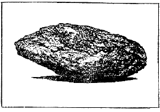
火山彈（伊豆大島）
火山毛の
成因は
一應説明を
要する。
讀者は
化學又は
物理學の
實驗に
於て、
硝子管を
融かしながら
急に
引きちぎると、
管の
端が
細い
絲を
引くことを
實驗せられたことがあるであらう。ハワイの
火山のように
海底から
盛り
上つて
出來たものは、
鎔融状態に
於て
比較的に
流動し
易い
性質を
持つてゐることは、
前にも
述べた
所であるが、かういふ
硝子質の
鎔岩に
對してこれを
跳ね
飛ばすような
力が
加はると
火山毛が
出來るのである。
歴史のどこかに
毛を
降らした
記事があるが、その
中の
或場合は
火山毛であつたらしく
思はれる。
寶暦九年七月二十八日弘前に
於て
西北方遽に
曇り
灰を
降らしたが、その
中には
獸毛の
如きものも
含まれてゐたといふ。これは
渡島大島の
噴火に
因つたものである。ピソライトといふ
雀の
卵のようなものが、
火山灰の
中に
轉つてゐることがある。これは
雨粒が
火山灰の
上に
轉つて
出來たものに
過ぎないのである。
火山はまた
泥を
噴出することがある。ヴェスヴィオの
山麓にあつたシラキュラニウムの
町は
泥流のために
埋められたが、この
頃は
開掘せられてある。
天明の
淺間噴火に
於ける
泥流の
被害は
前に
述べた
通りである。
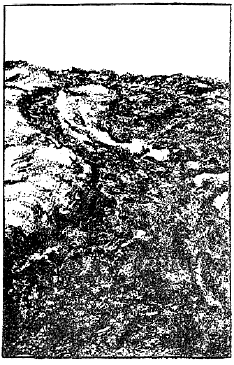
こーくす状鎔岩
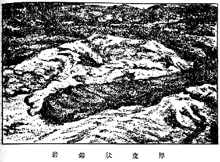
犀皮状鎔岩
火山の
噴出物は
固體の
他に
多くの
氣體がある。
水蒸氣は
勿論、
炭酸瓦斯、
水素、
鹽素、
硫黄からなる
各種の
瓦斯があり、
或ものは
燃えて
青い
光を
出したともいはれてゐる。
又これ
等の
瓦斯の
或物は
凝結して
種々の
鹽類となつて
沈積してゐることがある。
外國の
或火山からはヘリウム
瓦斯が
採集されたといはれてゐる。
日本に
於てもこれが
研究されたけれども
未だその
實在が
認められないようである。もしこれが
成功するならば、
飛行船用などとして
極めて
有益であり、
火山の
利用がこの
點に
於ても
實現することになるのであらう。
［＃改ページ］
ストロムボリのようにかつて
活動を
休止したことのない
火山や
磐梯山の
如く
極めて
稀に、しかし
突然な
爆發をなす
火山は
特別として、
一般の
活火山は、
間歇的に
活動するのが
原則である。
即ち
一時活動した
後は、
暫時休息して、
或は
硫氣孔の
状態となり、
或は
噴氣孔となり、
或はそのような
噴氣も
全くなくなることがある。その
休息時間の
長短、
或は
休眠から
覺めたときの
活動ぶりにも
各火山にめい／＼の
特色があつて、
一概にはいへないが、
平均期間よりも
長く
休止した
後の
噴火は
平均の
場合よりも
強く、
反對に
短く
休息した
後の
場合は
噴火が
比較的に
弱い。また
平均よりも
大きな
噴火をなした
後は
休息期が
長く、
反對に
小さな
噴火をなした
後は
休息期が
短い。
活火山が
新たに
活動を
開始しようとする
時、
何等かの
前兆を
伴ふ
場合がある。
土地が
噴火前に
次第に
隆起したことは、
大正三年の
櫻島噴火に
於て
始めて
氣づかれた
事實である。
恐らくは
大抵の
場合に
於てさうなのであらう。
噴火後の
實測によつて
一般に
土地が
次第に
下つて
行くことは
既に
多くの
場合に
證據立てられたところである。
讀者は
餅を
燒かれるとき、これに
類似した
現象を
觀察されることがあるであらう。
噴火の
間際になると、
極めて
狹い
範圍のみに
感ずる
地震、
即ち
局部の
微震が
頻々に
起ることが
通常である。
地表近くに
進出して
來た
蒸氣が、
地表を
破らうとする
働きのために
起るものであらう。
地震計を
以て
觀察すると、かういふ
地下の
働きの
所在地が
分るから、それからして
岩漿の
貯藏されてゐる
場所の
深さが
想像せられる。
又さういふ
種類の
地震と
爆發に
伴ふ
地震との
區別も、
地震計の
記録によつて
明らかにされるから、
地震計は
噴火の
診斷器となるわけである。
火山は
地震の
安全瓣だといふ
諺がある。これには一
面の
眞理があるように
思ふ。
勿論事實として
火山地方には
決して
大地震を
起さない。たとひ
多少強い
地震を
起すことがあつても、それは
中流以下のものであつて、
最大級の
程度を
遙かに
下つたものである。
前に
噴火の
前後に
地盤の
變動が
徐々に
起ることを
述べた。
最大級の
地震ではかような
地變が
急激に
起るのである。
火山地方ではその
程度の
地變が
緩漫に
起るのであるから、それで
火山が
地震の
安全瓣となるわけであらう。
噴火前には
周圍の
土地が
餅の
燒かれてふくらむような
状態になることは、
既に
了解せられたであらう。かような
状態にある
土地に
於て、
從來の
温泉は
湧出量が
増したり、
隨つて
温度も
上ることあるは
當然である。
其他新たに
温泉や
冷泉が
湧き
始めることもあり、
又炭酸瓦斯や
其他の
瓦斯を
土地の
裂け
目から
出して、
鳥の
地獄や
蟲の
地獄を
作ることもある。
前に
内外の
火山を
巡見した
場合の
記事を
掲げて
置いたが、
諸君若し
兩方を
比較せられたならば、
國内の
火山作用は
概して
穩かであつて、
海外の
最も
激烈なものに
比較すれば
遙かにそれ
以下であることを
了解せられるであらう。それで
噴火の
珍現象を
收録するには、
勢海外の
火山に
材料を
仰がざるを
得なくなる。
勿論それには
研究の
行屆いてゐるのと、さうでないとの
關係も
加はつてゐる。
噴火の
前景氣が
愈進んで
來ると、
火口からの
噴煙が
突然勢を
増して
來る。もし
櫻島のように
四合目邊りから
裂け
目を
作り
始め、そこから
鎔岩を
流す
慣例を
持つてゐるものならば、
其裂け
目を
完全にするために、
先づ
土砂を
吹き
飛ばす
等の
働きをする。
愈噴火が
始まると
菜花状の
噴煙に
大小種々の
鎔岩を
交へて
吹き
飛ばし、それが
場合によつては
數十町にも
達することがある。この
際鎔岩は
水蒸氣の
尾を
曳くことが
目覺ましい。
又菜花煙の
彼方此方に
電光の
閃くのが
見られる。この
際の
雷鳴は
噴火の
音に
葬られてしまふが、これは
單に
噴煙上にて
放電するのみで、
地上に
落雷した
例がないといはれてゐる。
或は
右のような
積極的動作の
代りに、
噴氣或は
噴煙が
突然やむような
消極的の
前徴を
示すものもあり、
又氣壓の
變動特に
低壓の
際に
起る
癖のあるものもあるから、
活動中或は
活動に
轉じそうな
火山に
登るものは、この
種の
火山特性に
注意する
必要がある。
噴火が
突然に
起ると、それが
極めて
激烈な
空氣波動を
伴ふことがある。
火口近くにゐてこの
波動に
直面したものは、
空氣の
大きな
槌を
以て
擲られたことになるので、
巨大な
樹木が
見事に
折れ、
或は
根こぎにされて
遠方へ
運ばれる。
勿論家屋などは
一溜りもない。
噴煙に
加はつて
出て
來る
火山灰やラピリは、
噴火の
經過に
伴つて、
其形状に
於ても
内容に
於ても
色々に
變化する。
千九百六年のヴェスヴィオ
噴火については、
初日から
八日目に
至るまでに
噴出した
火山灰を
日々の
順序に
竝べ、これを
硝子管につめて
發賣してゐる。
正否のほどは
保證し
難いが、それはとに
角こんな
些細な
事物まで
科學的に
整理せられてゐることは
歎賞に
價するであらう。
火口の
上皮が
一兩日の
間に
取り
除かれると、
噴火現象は
更に
高調して
來て、
遂に
鎔岩を
流出せしめる
程度に
達する。
但しこの
鎔岩の
流出するか
否かはその
火山の
特性にも
依るのであつて、
鎔岩流出が
必ず
起るものとも
限らない。
融けた
鎔岩の
温度は
攝氏千度内外で、
千二百度にも
達する
場合もあるが、
其流動性は、この
温度に
因つて
定まること
勿論であつて、
同一［＃ルビの「どういち」はママ］温度でも
成分によつて
著しい
相違がある。
前にも
述べた
通り、
深海底から
拔け
出た
火山の
産する
鎔岩は
流動性に
富んでゐるが、
大陸又はその
近くにある
火山から
産するものは、
流動性に
乏しく、
噴出物堆積して
圓錐形の
高山を
作るのが
通常である。
又鎔岩が
次第に
冷却して
來るとどんな
成分のものも
流動し
難くなり、
其後は
固形の
岩塊が
先頭の
岩塊を
踏み
越えて
前進するのみである。
噴煙が
間歇的に
起ると、
時々見事な
煙輪が
出來る。
丁度石油發動機の
煙突上に
見るように。
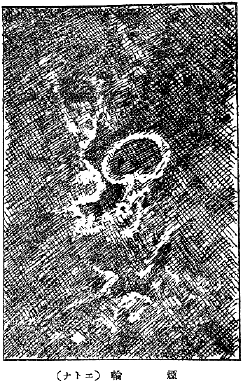
煙輪（エトナ）
閃弧といふものがある。
圖は
千九百六年のヴェスヴィオ
噴火に
於て、ペアレット
氏の
撮影に
係るものである。この
現象を
少年讀者に
向つて
説明することは
頗る
難事であるが、
唯噴火の
際、
發せられた
數回の
連續的爆發が
寫眞に
撮れたものと
承知して
貰ひたい。この
珍現象を
目撃することさへ
容易に
捉へ
難い
機會であるのに、しかもこれを
寫眞にとつて
一般の
人にもその
概觀を
傳へたペアレット
氏の
功績は
偉とすべきでゐる
［＃「すべきでゐる」はママ］。
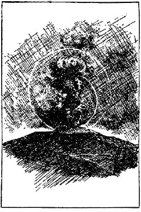
閃弧
ペアレット
氏はストロムボリにて
火の
玉を
見たと
稱してゐる。その
大いさは
直徑一米程であつて
青く
光つたものであつたといふ。これに
似た
觀察は
阿蘇山の
嘉元三年三月三十日（
西暦千三百五年五月二日）の
午後四時頃、
地中から
太陽の
如き
火玉が
三つ
出て
空に
上り、
東北の
方へ
飛び
去つたといふことがある。
現象が
極めて
稀であるので、
正體がよく
突き
留められてゐないが、
電氣作用に
基づくものだらうといはれてゐる。ヴェスヴィオの
千九百六年の
大噴火に
於て、
非常に
強い
電氣を
帶びた
噴煙を
認めたこともあり、その
靡いた
煙に
近づいた
時、
服裝につけてゐた
金屬の
各尖端から
電光を
發したことも
經驗せられてゐる。
噴火作用中で
最も
恐れられてゐるのは、
赤熱した
火山灰が
火口から
市街地に
向つて
發射されることである。この
事は
西暦千九百二年五月八日マルチニック
島プレー
山の
噴火に
就て
記した
通りであるが、サンピール
市二萬六千の
人口中、
生存者は
地下室に
監禁されてゐた
一名の
囚徒のみであるので、
右の
現象の
實際の
目撃者は
一人も
生存し
得なかつたわけである。
然しこの
噴火に
就いて
最も
權威ある
調査を
遂げたラクロア
教授は、
同年十二月十六日以來數回に
亙り
同現象を
目撃した。
同教授の
計算によると、
火口から
打出されてから
山麓或は
海面に
到達して
靜止するまでの
平均の
速さは、
毎秒二十米以上であつて、
最大毎秒百五十米にも
及び、
其巨大な
抛射物から
放たれる
菜花状の
雲は、
高さ
四五千米にも
達したといふ。さうしてこれが
通過した
跡には
啻に
火山灰や
ラピリのみならず、
大きな
石塊も
混入してゐた。かゝる
恐ろしい
現象はこれ
迄右のプレー
噴火に
經驗せられたのみであつて、
其他の
火山に
於ては
未だかつて
經驗されたことがない。
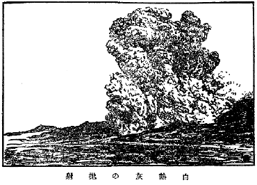
白熱灰の抛射
かういふ
大規模の
噴火も
最高調に
達するのは
數日或は
一週間内にあるので、その
後は
噴火勢力とみに
減退して
行くのが
通常である。